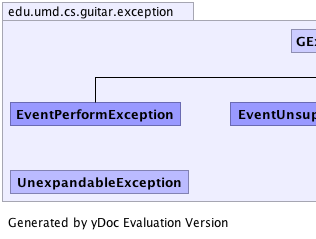
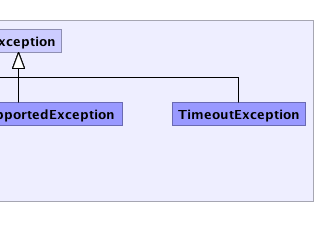

|
|||||||||
| PREV PACKAGE NEXT PACKAGE | FRAMES NO FRAMES | ||||||||
See:
Description
| Class Summary | |
|---|---|
| UnexpandableException | |
| Exception Summary | |
|---|---|
| EventPerformException | Exception related to Event performance during execution. |
| EventUnsupportedException | |
| GException | All runtime exception in GUITAR extend this class |
| TimeoutException | |
Package for GUITAR exceptions.
|  |  |
|
|||||||||
| PREV PACKAGE NEXT PACKAGE | FRAMES NO FRAMES | ||||||||